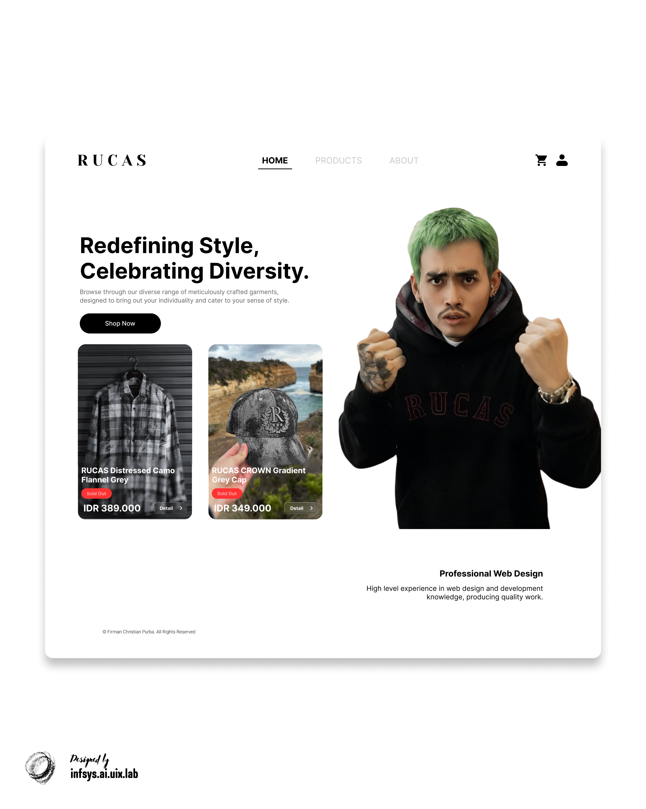

Design Showcase
Click on the design image to enlarge it.

Try Interactive Prototype
See how this design solution works in real-time. Click the button below to open the High-Fidelity Prototype directly in Figma.
open_in_new Open Figma Prototype